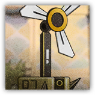

假想敌：镜膜 Hypothetical Enemy: Mirror Membrane
近战 物理；精英 构装（源石造物）

|
 |
假想敌。参照被源石占据的机械而设计的假想敌。我们曾在罗德岛本舰与这样的机械造物交战。 镜膜。源石夺走了我们的造物，赋予它们更危险的能力。必须在模拟的战斗中找到破解这一困境的更多办法。 |
镜膜丨The Mirror Membrane
中型构装（源石造物），无阵营
| AC 17 | 先攻 +1（11） |
| HP 150（20d8+60） | |
| 速度 30 尺 | |
| 调整 | 豁免 | 调整 | 豁免 | 调整 | 豁免 | |||||||||
|---|---|---|---|---|---|---|---|---|---|---|---|---|---|---|
| 力量 | 18 | +4 | +4 | 敏捷 | 12 | +1 | +1 | 体质 | 16 | +3 | +3 | |||
| 智力 | 6 | -2 | -2 | 感知 | 10 | +0 | +0 | 魅力 | 8 | -1 | -1 |
| 免疫 毒素，心灵；目盲，耳聋，中毒，力竭，麻痹，昏迷 |
| 感官 盲视30尺，黑暗视觉60尺，被动察觉10 |
| 语言 无 |
| CR 9（XP 5,000；PB+4） |
特质 Traits
折射外壳 Magic Resistance Shell。当镜膜未处于沉默状态时，其为抵抗法术和其它魔法效应而作的豁免检定具有优势，且可以在豁免结果中加入熟练加值。
共振反射 Resonance Reflection（1/回合）。当镜膜受到法术攻击时，其外壳会短暂共振，对30尺内所有生物（包括自身）造成9（2d8）力场伤害。
动作 Actions
多重攻击 Multiattack。镜膜发动两次扇面切割。
扇面切割 Fan-shaped Cut。近战攻击检定：+8，触及10尺。命中：21（4d8+4）力场伤害，且目标5尺内的另一生物受到9（2d8）的力场伤害。
附赠动作 Bonus Actions
防护镀层 Protective Coating（1/日）。镜膜激活源石能量，为自己添加100点临时生命值。以此获得的临时生命值会在镜膜陷入沉默状态后立即消失。